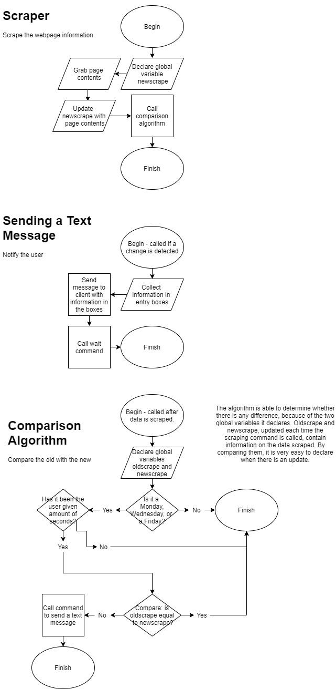

Python Webscraper for XKCD
By Orion Capell, Stanley Shinault, and Marcus Polk
Our webscraper's purpose is to scrape XKCD's website and text the user whenever a new comic is released.
GitHub pageOrion's section Stanley's section Marcus's section
Techniques used: functions, GUI, conditionals.
Tools used: BeautifulSoup, requests, Twilio, Tkinter.
Resources: Stackoverflow, PythonCentral, Quora
